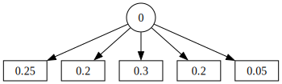

from gtbook.display import showdiscrete
Discrete Inference: helping a trash can robot reason about its world.
This notebook contains some utility functions for discrete inference, primarily for use in Chapter 2 of the book.
DiscretePrior
DiscretePrior is something that was previously defined here but is now built into GTSAM as DiscreteDistribution:
C = 0, 5 # A key is an identifier (0 in this example) and a cardinality (e.g., 5)
prior = gtsam.DiscreteDistribution(C, "25/20/30/20/5")
test_eq(prior.empty(), False)
# TODO: this does not support key formatting yet, just shows the key (0 in this case)
show(prior)
prior_probability_for_3 = prior(3)
test_eq(prior_probability_for_3, 0.2)Variables
We would like to make it easier for people to create discrete variables, with a meaningful name, and meaningful strings associated with discrete values. Below is it possible design:
Variables
Variables ()
A problem domain for discrete variables.
DiscreteVariable
DiscreteVariable (name:str, domain:list[str])
Creating discrete variables
Here is an example: - we first create the variables instance - then define a new discrete category using the discrete method - we then check that it has a name and a domain
variables = Variables()
categories = ["cardboard", "paper", "can", "scrap metal", "bottle"]
Category = variables.discrete("Category", categories)
test_eq(variables.name(Category), "Category")
test_eq(variables.domain(Category), categories)Binary variables are supported as a special case:
Conductivity = variables.binary("Conductivity")
test_eq(variables.domain(Conductivity), ["false", "true"])Assignments
Providing the domains to the Variables data structure also makes it easy to create an assignment. An assignment, which has the type DiscreteValues in GTSAM, is a mapping from discrete keys to discrete values.
assignment = variables.assignment({Category: "can"})
test_eq(isinstance(assignment, gtsam.DiscreteValues), True)
test_eq(assignment[C[0]], categories.index("can"))Rendering assignments
We also create a markdown renderer for DiscreteValues , awaiting the ability of pybind11 to wrap classes inherited from STL containers:
We have the functionality to provide a key formatter
keyFormatter = variables.keyFormatter()
test_eq(keyFormatter(Category[0]), "Category")We can also create a names dictionary that allows our rendering code to retrieve the domain for a given key:
names = variables.names()
test_eq(isinstance(names, dict), True)
test_eq(len(names), 2)
test_eq(names, {0: ['cardboard', 'paper', 'can', 'scrap metal', 'bottle'], 1: ['false', 'true']})With these 2 in hand, we could create a markdown renderer:
test_eq(
variables.values_markdown(assignment),
"|Variable|value|\n|:-:|:-:|\n|Category|can|\n",
)And HTML:
HTML(variables.values_html(assignment))| Variable | value |
|---|---|
| Category | can |
Series of discrete variables
As of version 0.0.14 , we also support generating a set of discrete keys with integer indices, to support reasoning over time:
n = variables.size()
# add 5 variables
states = variables.discrete_series('s', range(1,5), ["no", "yes"])
test_eq(variables.size(), n+4)
# calling twice should not add any more
states = variables.discrete_series('s', range(1,5), ["no", "yes"])
test_eq(variables.size(), n+4)
test_eq(variables.name(states[1]), "s1")
test_eq(variables.domain(states[1]), ["no", "yes"])n = variables.size()
# expand range
states = variables.discrete_series('s', range(9,10), ["no", "yes"])
test_eq(variables.size(), n+1)
test_eq(variables.name(states[9]), "s9")Rendering all variables defined
It would be nice to inspect a Variables instance easily in a notebook, and we can easily support this by supplying an HTML representation::
variables| Variable | Domain |
|---|---|
| Category | cardboard, paper, can, scrap metal, bottle |
| Conductivity | false, true |
| s1 | no, yes |
| s2 | no, yes |
| s3 | no, yes |
| s4 | no, yes |
| s9 | no, yes |